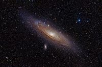

Guia das Galáxias

Galáxia de Andromeda
Descrição
A galáxia de Andrômeda (português brasileiro) ou galáxia de Andrómeda (português europeu) (Messier 31, NGC 224) é uma galáxia espiral localizada a cerca de 2,54 milhões de anos-luz de distância da Terra, na direção da constelação de Andrômeda.
Dados Interessantes
- oAlém da Via Láctea, é a galáxia mais estudada
- Suas duas galáxias satélite, Messier 32 e Messier 110, são visíveis em binóculos.
- sua distância em relação à Terra ainda não foi bem definida
Outras Galáxias:
Galáxia Olho Negro
Galáxia magalhães